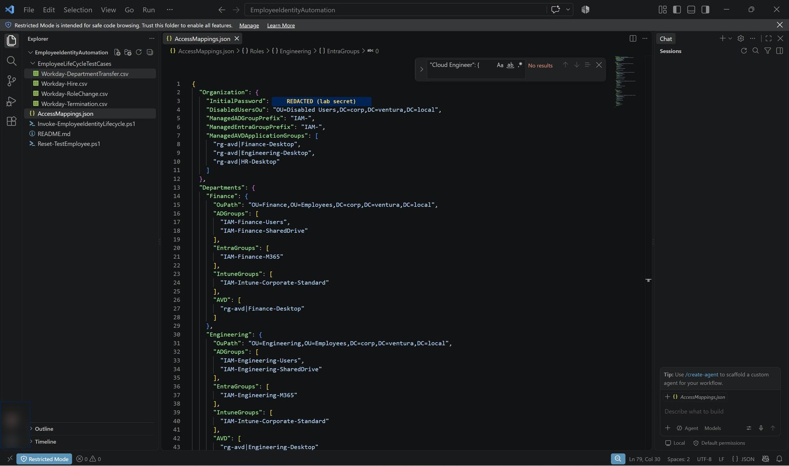
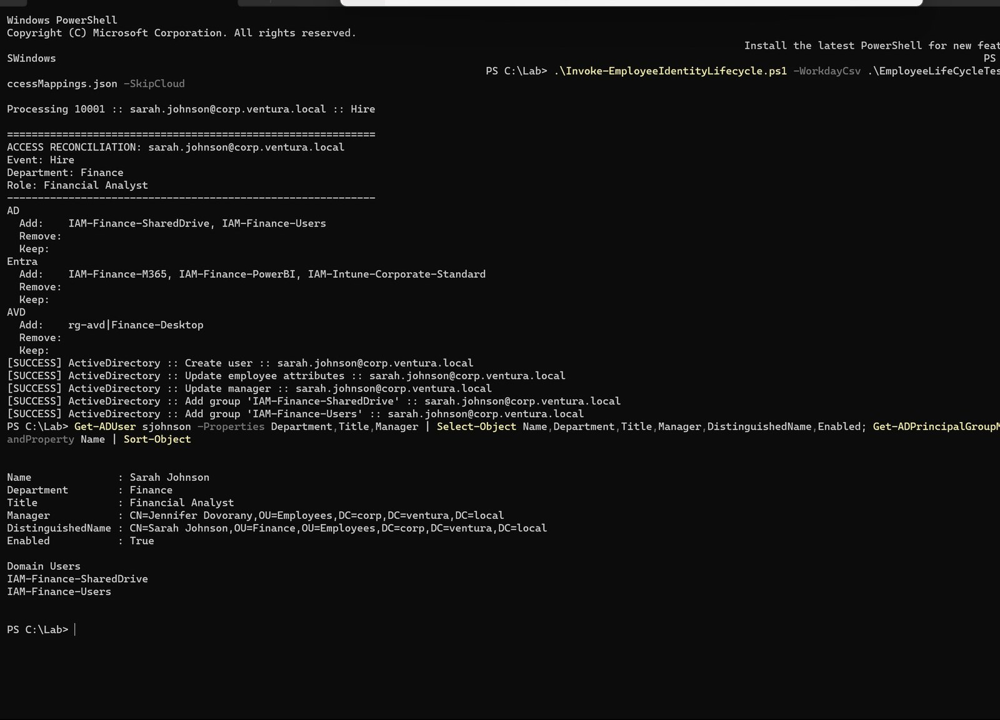
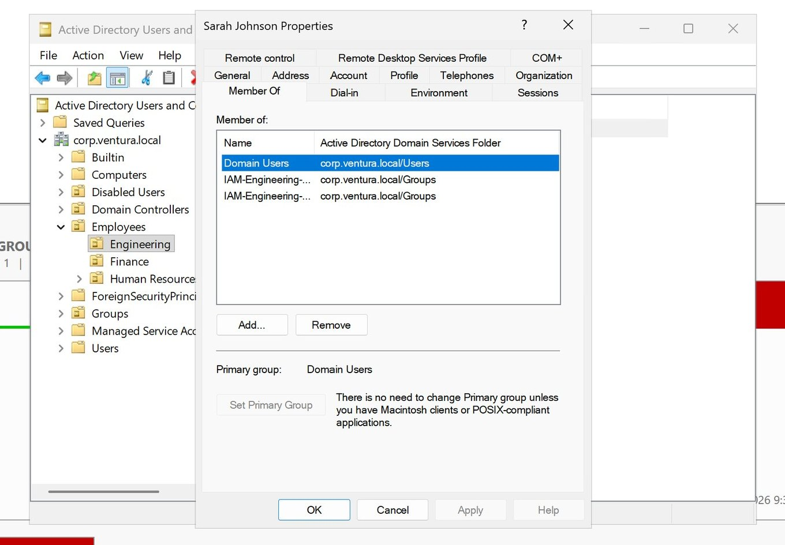
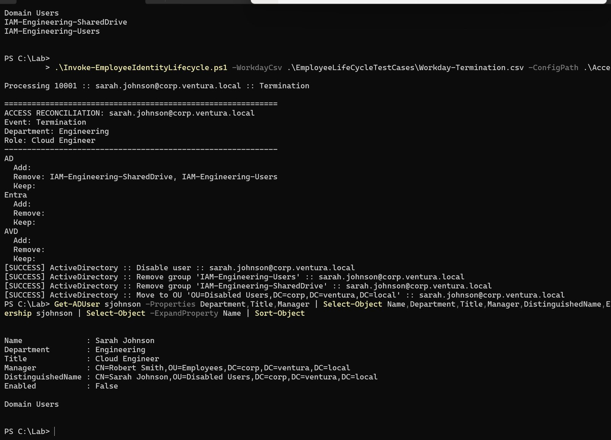
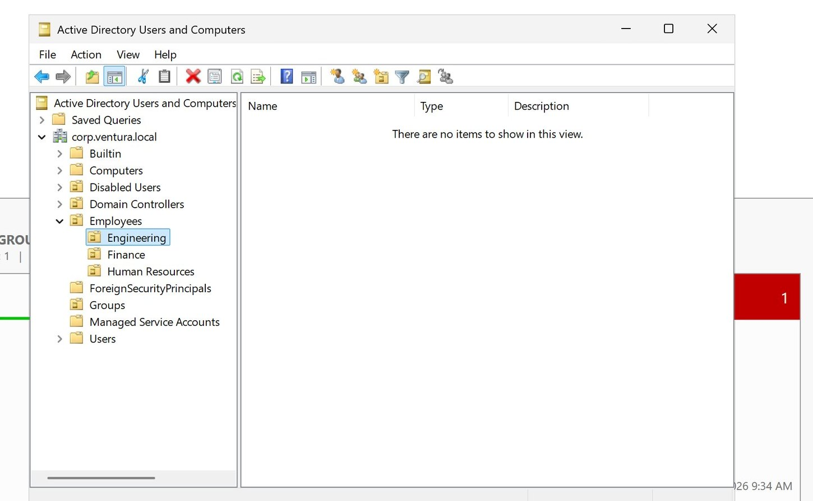

Thesis
Make HR data the only thing a person gets right
Everything downstream should be computed, consistent, previewable and provable.
Every organization repeats the same identity work: a person is hired, changes roles, moves departments and eventually leaves. Identity teams call it Joiner-Mover-Leaver. It is one of the highest-volume and highest-risk workflows in IT, because access is the front door to every system a company owns — and in most departments it is still a ticket and a checklist.
A typical joiner starts as an email from HR. A technician opens Active Directory Users and Computers, types the details, picks an OU, and often copies group memberships from "someone in the same team." Cloud apps, device policies and virtual desktops follow in other consoles. Every hand-off relies on someone reading the ticket correctly and remembering every step.
- Joiners wait for access, or inherit someone else's permissions through "copy user"
- Movers receive new access, but old access is rarely removed, so privileges accumulate over years
- Leavers depend on a ticket reaching IT on time; a missed step leaves a working credential behind a former employee
That asymmetry is why privilege creep survives diligent teams: nothing in a manual process asks for removal. The engine replaces the checklist with a model in which removal is not a separate step anyone has to remember. It is simply what happens when current access exceeds what HR data justifies.
System
Desired state, not scripted clicks
The same idea behind infrastructure-as-code tools, applied to identity.
Instead of scripting individual actions per event, the engine declares what access should exist for each person and reconciles reality to match. A transfer removes old access as naturally as it grants new access, because both fall out of the same comparison. The engine is Invoke-EmployeeIdentityLifecycle.ps1; the same entry point handles all four events, and the event type comes from the HR record, not from the operator.
| Component | Form | Responsibility |
|---|---|---|
| HR source of truth | Workday-*.csv | Employee ID, name, UPN, department, job title, manager, status and lifecycle event, exported from a Workday-style system |
| Access policy | AccessMappings.json | Department baselines, role overlays, OU paths, the managed group prefix and the quarantine OU |
| Run-time switches | -WhatIf · -AuditOnly · -SkipCloud · -SkipActiveDirectory | How far a run may go: simulate, plan only, or restrict to one side of the hybrid estate |
| Active Directory | ActiveDirectory module | Users, attributes, manager links, OU placement and scoped group membership — validated in the lab |
| Microsoft Entra ID | Microsoft Graph SDK | Group membership, sign-in blocking and session revocation — implemented, not yet run |
| Intune targeting | Entra security groups | Membership in the groups device policies are assigned to — implemented, not yet run |
| Azure Virtual Desktop | Az modules · RBAC | Desktop Virtualization User role on application groups — implemented, not yet run |
| Audit trail | EmployeeIdentityAudit.jsonl | One append-only JSON record per action, ready to forward to a SIEM |
What happens on every run
Import and validate
Required columns, supported lifecycle events and configuration sections are checked. A missing column, an empty file or an unknown event stops the run before any change is attempted.
Compute desired state
Department plus role resolves to a target OU and target groups for Active Directory, Entra ID, Intune and AVD.
Snapshot and diff
Current access is read and compared with desired access, split into Add, Remove and Keep, and printed per system before anything changes.
Dispatch the lifecycle event
Hire routes to onboarding; RoleChange and DepartmentTransfer to change; Termination to offboarding; Reconcile corrects drift on demand.
Apply through one door
Every write passes through Invoke-ManagedChange: ShouldProcess, try/catch, and an audit record for each action.
Policy
Access composed from two layers
Department baseline plus role overlay, both declared in one JSON file.
Automation is only as good as the structure it acts on, so the directory was designed so that where an account lives and which groups it holds both follow directly from HR data. Department OUs mirror HR departments under an Employees OU, a Disabled Users OU acts as quarantine, and all OUs are protected from accidental deletion. The department decides the OU and the core groups every member needs. The job title adds role-specific entitlements on top. Changing policy is a configuration change, not a code change.
| Department baseline | Active Directory | Entra ID | AVD |
|---|---|---|---|
| Finance | IAM-Finance-Users IAM-Finance-SharedDrive | IAM-Finance-M365 | Finance-Desktop |
| Engineering | IAM-Engineering-Users IAM-Engineering-SharedDrive | IAM-Engineering-M365 | Engineering-Desktop |
| Human Resources | IAM-HR-Users IAM-HR-SharedDrive | IAM-HR-M365 | HR-Desktop |
| Role overlay | Entra ID | Intune |
|---|---|---|
| Financial Analyst | IAM-Finance-PowerBI | none |
| Cloud Engineer | IAM-Azure-Developers | IAM-Intune-Engineering |
| HR Specialist | IAM-HR-Applications | none |
Every department also receives IAM-Intune-Corporate-Standard. AVD application groups are addressed as resource group and application group pairs in the policy file.
A naming prefix as a security control
Every automation-owned group starts with IAM-, and the engine only reads and changes memberships in groups with that prefix. Break-glass, built-in and hand-managed project groups stay outside its reach. That keeps automation predictable, makes ownership obvious to anyone browsing the directory, and bounds the damage any bug could do.
Managers as real directory objects
The HR record carries the manager's UPN, which the engine resolves to a distinguished name and writes to the manager attribute. That attribute is not decoration: it powers org charts, approval routing and access reviews downstream.
Engine
The reconciliation core
A small, pure, testable function that treats access as sets.
Compare-AccessSet takes current and desired group lists, normalizes and de-duplicates both, and returns Add, Remove and Keep. It has no side effects, the same function serves all four target systems, and it is the natural first target for unit tests. Every access decision the engine makes can be explained by pointing at two lists and their difference.
Scoping happens before the diff
Group sync reads the account's current memberships, filters them to the managed prefix, and only then computes the difference. Because the filter precedes the comparison, an unmanaged group such as Domain Users can never appear in the Remove list at all — it is not merely skipped at write time, it never becomes a candidate.
Seven layers, one job each
The 30 functions are grouped so that connectors can be added or swapped without touching lifecycle logic.
| Lifecycle event | Active Directory actions, in order |
|---|---|
| Hire | Create the user in the department OU with a must-change-at-logon password, set title and department, link the manager, add baseline and role groups |
| RoleChange · Transfer | Update attributes and manager, move the OU if the department changed, add missing groups, remove groups no longer justified |
| Termination | Disable the account, remove every managed membership, move to the Disabled Users OU; in the cloud, also block sign-in and revoke sessions |
Safety
Every write goes through one door
Identity automation can do a lot of damage very quickly. These guardrails are what make it safe to point at a directory.
No connector writes to a directory directly. Each passes its change to Invoke-ManagedChange as a script block. In audit-only mode the function records the change as Planned and returns. Otherwise it asks ShouldProcess, runs the change inside a try/catch, and records Success, Skipped, or Failed with the exception message — re-throwing so the failure is not swallowed. Because there is exactly one path to a write, there is no way to change access off the record.
| Guardrail | Implementation |
|---|---|
| Preview before apply | SupportsShouldProcess with ConfirmImpact = 'High' gives native -WhatIf and confirmation prompts; -AuditOnly logs the full plan without touching anything |
| Idempotent re-runs | Only the difference is applied; running the same input again makes no duplicate group changes |
| Immutable matching | Accounts are matched on the employeeID attribute, never on display name |
| Input contract | Required columns and supported events enforced before any change; UPNs lower-cased; SamAccountName derived from UPN when blank |
| Fail safe, fail loudly | Set-StrictMode and ErrorActionPreference = 'Stop' turn silent errors into exceptions |
| Per-employee isolation | Each record runs in its own try/catch, so one bad row is logged without halting the batch |
| Limited blast radius | Only IAM- groups are ever read for removal or changed |
| Structured evidence | Append-only JSONL: UTC timestamp, employee ID, UPN, event, system, action, result, details, run-by account and computer |
Honest drift reporting
Under -SkipCloud the engine still computes and prints the Entra and AVD plan. Pending cloud additions keep appearing on subsequent runs until a cloud run reconciles them. The engine never reports a state it did not produce.
Proof
One employee, four lifecycle events
A single identity taken from hire to termination against a live domain, verified twice after every run.
Every run targeted corp.ventura.local from its domain controller using the ActiveDirectory module, with -SkipCloud set. OUs, managed groups and managers from the access model existed beforehand. All four HR records shared employee ID 10001, Sarah Johnson, exactly as one real employee's records would. After each run the account was checked from PowerShell with Get-ADUser and a group membership query, and visually in Active Directory Users and Computers — two independent views of every result.
| Event | HR record | Changes | Verified outcome |
|---|---|---|---|
| Hire | Finance · Financial Analyst · Jennifer Dovorany | 5 | Created in the Finance OU; title, department and manager set; both Finance groups added; enabled; audit folder created on first run Pass |
| Role change | Finance · Cloud Engineer · Jennifer Dovorany | 1 | Title updated; still in Finance; both groups under Keep with no group writes; no manager write issued Pass |
| Department transfer | Engineering · Cloud Engineer · Robert Smith | 7 | Attributes and manager updated; moved to the Engineering OU; two Engineering groups added and both Finance groups removed in the same run Pass |
| Termination | Status Terminated | 4 | Disabled; both Engineering groups removed; moved to Disabled Users; only Domain Users remains, untouched Pass |
What the role change proves
Idempotency. A naive script would remove and re-add every group on each run, adding log noise and brief access gaps. The engine saw the Finance groups were already correct and made no group writes; only the changed attribute was updated.
What the transfer proves
No creep. Old department access was removed in the same run the new access was granted, without anyone deciding to remove it. Nothing in the desired state justified keeping it.
Between full campaign runs, Reset-TestEmployee.ps1 deletes only the test account and verifies the deletion, leaving managers, groups and OUs in place, so the four tests can be repeated from a known clean state.
Leavers
Quarantine, not deletion
The highest-risk event gets the most defensive design.
For a leaver, Get-DesiredAccess returns an empty target on every system and the Disabled Users OU as the destination. The desired state is not "remove these groups"; it is "hold nothing," and reconciliation does the rest.
Deleting an account destroys its SID, group history and ownership links. Disabling and quarantining keeps evidence for audits and legal holds, supports rehires, and gives the business time to hand over files. In the cloud path the same event also blocks Entra sign-in, revokes active sessions and removes AVD role assignments, because a disabled on-premises account does not by itself end a live cloud session.
Governance
Lab shortcuts, named
A lab is allowed shortcuts. A production identity system is not. This is what I would harden first.
| Lab shortcut | Risk | Production hardening |
|---|---|---|
| Initial password in plaintext in the policy file | Anyone with file access learns every new hire's first password | A unique random password per user at run time, or an Entra Temporary Access Pass; secrets in Azure Key Vault through SecretManagement |
| Runs as the domain Administrator | A bug or compromise has full domain control | A group managed service account with rights delegated only on the Employees and Disabled Users OUs and the managed groups |
| Interactive Graph sign-in with broad directory write | Over-privileged, and cannot run unattended | App registration with certificate authentication, scoped to user and group-membership write permissions |
| CSV values placed into AD filter strings | Malformed input could change query meaning | Validate employee IDs as digits and UPNs against a pattern; escape quotes before building filters |
| Audit log on the domain controller's disk | Can be altered or lost with the server | Forward to Microsoft Sentinel or another SIEM with immutable retention; alert on Failed results |
| Manually triggered with a CSV file | Depends on an operator running it on time | Scheduled Azure Automation runbook on a Hybrid Worker fed by the Workday API, plus a nightly Reconcile run for drift |
The published report and this dossier were sanitized before release: the lab password, the Windows product ID, internal IP addresses and a profile photo were removed. The domain controller name, host name and lab domain remain visible, deliberately, as evidence the captures are from a real environment.
Build
The engine at work
Captured in the lab. Diagrams from the technical report; console and directory screenshots cropped to the relevant region.








Status
Validated, implemented, next
What ran, what is written but has not run, and what reviewing my own output surfaced.
| Capability | State | Note |
|---|---|---|
| AD access model | Validated | Department OUs, quarantine OU, prefixed groups, managers as directory objects |
| Desired-state reconciliation | Validated | Add, Remove and Keep across all four lifecycle events |
| Audited write path | Validated | -WhatIf, -AuditOnly and JSONL records; audit folder created on first run |
| Test harness | Validated | Four CSV scenarios and a reset script for repeatable campaigns |
| Entra ID connector | Implemented | Groups, sign-in block and session revocation; awaiting a tenant |
| Intune targeting | Implemented | Security-group membership for device policy assignment; awaiting a tenant |
| AVD access | Implemented | RBAC on application groups; awaiting a tenant |
| Hybrid identity | Next | Entra tenant with Cloud Sync; repeat the campaign with cloud verification |
| Automated tests & linting | Next | Pester tests for the reconciliation core; PSScriptAnalyzer in CI |
| Secure operations | Then | Key Vault, random first passwords, gMSA, certificate-based Graph app, Sentinel forwarding, input hardening |
| Event-driven governance | Later | Workday API or webhook triggers, approvals for privileged roles, access reviews, exit handover of licenses, mailbox and OneDrive |
Engineering review: refinements from the test output
- Attribute writes run on every event, even when title and department are unchanged. Compare values before writing so the audit log records only real changes
- A terminated account keeps its manager and title. Clear the manager link, stamp a termination date, and hide the account from address lists
- The Cloud Engineer role adds cloud entitlements only. Role-scoped AD groups are already designed in the project README and need only a policy entry and two groups
- Tests are verified by reading output. Codify expected results as Pester assertions so the campaign becomes one automated regression suite